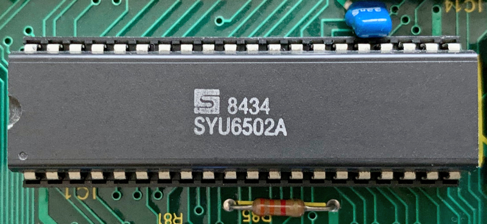

OSBYTE 146, 148, 150, 157; OS Entry points and 6502 Vectors (NMI, Reset, IRQ); Chapter 25: Appendix; Circuit diagrams in vector format; Chapter 26: Index; Index of MOS features as they are seen by user programs; - 89 bytes (0.5%)
- §1. OSBYTE 157 - Fast Tube BPUT
- §2. OSBYTE 146 - Read a byte from FRED
- §3. OSBYTE 148 - Read a byte from JIM
- §4. OSBYTE 150 - Read a byte from SHEILA
- §5. Unused default vector table pointer
- §6. Operating System function calls
- §7. 6502 Vectors
§1. OSBYTE 157 - Fast Tube BPUT.
By default this uses the standard OSBPUT routine.
.osbyte157EntryPoint = $ffa7 TXA A=X BCS .OSBPUT ALWAYS branch
§2. OSBYTE 146 - Read a byte from FRED.
.osbyte146EntryPoint = $ffaa LDY .fredPage,X read a byte from FRED area RTS
§3. OSBYTE 148 - Read a byte from JIM.
.osbyte148EntryPoint = $ffae LDY .jimPage,X read a byte from JIM area RTS
§4. OSBYTE 150 - Read a byte from SHEILA.
.osbyte150EntryPoint = $ffb2 LDY .sheilaPage,X read a byte from SHEILA area RTS
§5. Unused default vector table pointer.
This may have been intended for user programs to be able to read the default handler addresses, but is not documented, and is not used by the ROM. New in MOS 1.20.
!byte .defaultVectorTableEnd - .defaultVectorTable length of table [unused] !word .defaultVectorTable table of addresses - the default vector routines [unused]
§6. Operating System function calls.
Historical note: The Acorn System 2 began the practice of placing entry points like these at the high end of the ROM, (mostly) spaced three bytes apart so that each can jump directly back into the ROM or through a vector, and still be called as if they were subroutines. This practice protected user programs from breaking when the MOS was revised, since it meant there were reliable addresses to call. Though System 2, and similarly the Atom, have a slightly smaller set of entry points, so addresses are not the same (OSWRCH is at $FFF4 on the System 2 and Atom, not $FFEE as here), the basic design is identical. System 2 and the Atom both perform the CR/LF manoeuvre below in which OSASCI, OSNEWL and OSWRCH are combined.
.OSRDRM = $ffb9 JMP .osrdrmEntryPoint get a byte from sideways ROM [new in MOS 1.20] .VDUCHR = $ffbc JMP .vduChrEntryPoint output a character to screen .OSEVEN = $ffbf JMP .eventEntryPoint generate an EVENT .GSINIT = $ffc2 JMP .gsinitEntryPoint initialise for parsing a string .GSREAD = $ffc5 JMP .gsreadEntryPoint parse character from string .NVRDCH = $ffc8 JMP .osrdchEntryPoint non vectored .OSRDCH .NVWRCH = $ffcb JMP .oswrchEntryPoint non vectored .OSWRCH .OSFIND = $ffce JMP (.vectorFINDV) open or close a file .OSGBPB = $ffd1 JMP (.vectorGBPBV) transfer data to or from a file .OSBPUT = $ffd4 JMP (.vectorBPUTV) save a byte to file .OSBGET = $ffd7 JMP (.vectorBGETV) get a byte from file .OSARGS = $ffda JMP (.vectorARGSV) read or write file arguments .OSFILE = $ffdd JMP (.vectorFILEV) read or write a file .OSRDCH = $ffe0 JMP (.vectorRDCHV) get byte from current input stream .OSASCI = $ffe3 CMP #.charRETURN output byte, expanding carriage BNE .OSWRCH returns to CR/LF ($0A,$0D) .OSNEWL = $ffe7 LDA #.charLINEFEED output a CR/LF to VDU stream JSR .OSWRCH LDA #.charRETURN .OSWRCH = $ffee JMP (.vectorWRCHV) output a character (to the screen and/or other output streams) .OSWORD = $fff1 JMP (.vectorWORDV) perform operation with data from a parameter table .OSBYTE = $fff4 JMP (.vectorBYTEV) perform operation with three parameters <A>,<X>,<Y> (equivalent to BASIC's *FX command) .OSCLI = $fff7 JMP (.vectorCLIV) pass string to command line interpreter

Finally the last 6 bytes are designated (by the design of the 6502 chip) to contain the addresses of the routines that handle an NMI, a RESET and an IRQ condition.
* = $FFFA !word .nmiEntryPoint NMI address !word .resetEntryPoint RESET address !word .irqEntryPoint IRQ address